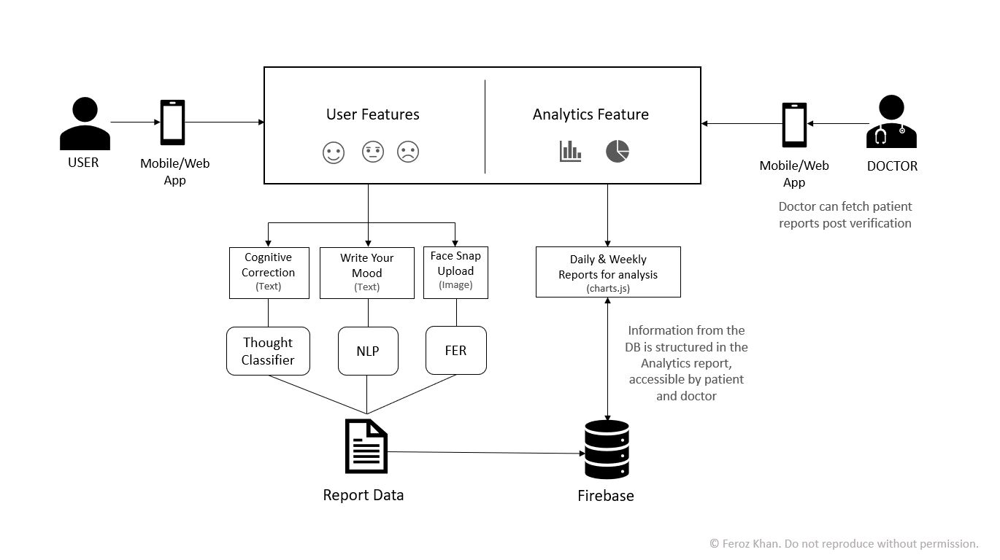

Mental Health Analytics with NLP
GitHub Code
All code is available on my GitHub.
Problem Statement
Mental health challenges such as stress, anxiety, and depression (SAD) remain prevalent, particularly among younger individuals aged 13–29. In a post-pandemic world, these issues have been exacerbated by societal pressures, isolation, and economic uncertainty.
The World Health Organization (WHO) estimates a $1.03 trillion economic cost in terms of productivity loss due to untreated mental health issues in a developing country like India, between 2012–2030. In this context, there is an urgent need for innovative, technology-driven solutions to provide accessible and meaningful mental health support.
Key Challenges:
- A shortage of trained mental health professionals, with most concentrated in urban areas.
- Stigma discouraging individuals from seeking help.
- Existing mental health apps offering temporary solutions (e.g., soothing soundbites) rather than addressing root causes or providing actionable insights.
Proposed Solution
The proposed solution leverages Natural Language Processing (NLP), Deep Learning, and Facial Expression Recognition (FER) to offer a holistic mental health solution. Designed to act as a personal mental health assistant, it focuses on identifying root causes of mental strain and equipping users and therapists with actionable insights.
1. Mood Tracking via "Write Your Mood":
Users regularly describe their day, sharing their thoughts and emotions. NLP processes these entries to analyze sentiments (e.g., happy, sad, anxious, angry).
2. Cognitive Thought Analysis via "Cognitive Corrections":
Users input recurring thoughts that bother them. Using NLP and datasets, thoughts are categorized (e.g., Family, Relationship, Finance). Sentiment analysis identifies the most concerning categories and their emotional impact, helping therapists and users pinpoint recurring issues.
3. Emotion Recognition via "Face Snap":
Users upload a recent photo. FER powered by neural networks analyzes facial expressions to detect emotions (e.g., joy, sadness, fear).
The app generates comprehensive analytic reports, offering:
- Mood patterns and emotional trends over time.
- Insights into the categories of thoughts that affect the user most.
- Data to assist psychologists in diagnosing and monitoring patients during both online and offline appointments.
Business Domain
Healthcare Technology & Data Analytics.
Tech Stack
- Programming Languages: Python
- Frameworks: Flask
- Databases: SQL
- Frontend: React
- Cloud Platforms: Azure
- AI/ML Techniques: NLP, Neural Networks, Sentiment Analysis, Facial Expression Recognition (FER)
Project Diagrams
Demo Video
Learnings
This project made me realize the value of emphathy when addressing social issues.